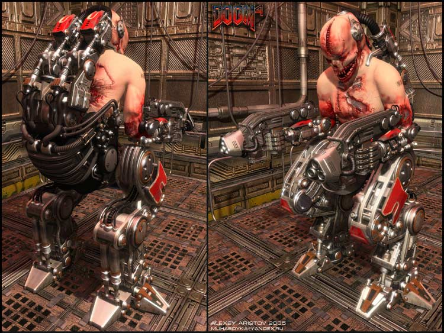

#7485 1 2006-03-17T16:23:42Z kai Alright, as good as doom is...I have some serious qualms with DooM 3 and DooM: The Movie. Lets start with DooM 3:
First I have to admit, id really did outdo themselves with the new doom. The graphics were sexy, the monsters quite vivid and realistic, and all around a great ride. But....there were some serious let downs.
1. No spidermastermind. They edited it out for god knows why, which really sucked seeing as the spidermastermind was practically the cyberdemons brother. They did, however, put in than spider-centour thing...but its just not the same.
2. No pain elemental. Sure, they had lost souls, but the pain elemental gave birth to lost souls.
3. Cyberdemon cannot be killed by "traditional" methods. That was the best part when fighting a cyberdemon!!! THAT WAS THE SOUL PURPOSE OF THE BFG!!!
4. No arachnitrons....well, thats not so bad accually seeing as those f***ers were REALLY annoying.
5. No sawed off shotgun. I loved that gun. I have wet dreams about that gun. It was the best close quarter weapon, two shots ripped a frickin Hell Knight to shreds!!
6. No split screen multiplayer/split screen co-op. Not everyone can afford x-box live, and not everyone has a top notch pc....damn bill gates....
Other than that, doom 3 met my every expectation. Now on to DooM the movie:
*for those who do not like spoilers, read no further*
There is no hell involved with the movie, instead it revolved around the missing genome in the human genetic code. If you were evil, you mutated into a monster (but goat, one of the marines turning into a monster, was a jesus freak! And the guy who turned into the pinky was a decent, honest guy!), but if you were pure of soul you heal instantly, become faster, and become stronger. End point: the monsters are not demons, but human mutations!! Further more the only monsters in the movie were hell knights, imps, zombies, and one pinky. ONE...FRICKIN...PINKY. Sure, the movie makes a great action/horror, but other than that...the message was completly lost.
Any thoughts?
#155606 2 2006-03-18T14:44:50Z Ghos7Soldier About the movie...If I remember correctly...
~FURKING SPOILERS!~
In doom the movie...It wasn't that if you were evil you turned evil...it was about your blood type or something about your genes that the diseased like...and infected only those that something about them it liked..I'm not 100% sure on this but it had something to do with your blood type or something similar...The guy who was a priest was f-ing insane...a priest does NOT cut himself from an accident...He prays to god for forgivness.
About the game...
1.If I remember correctly...they took him out because they had nowhere to put him since they already had the game/maps built and he would be too big...They actually had him ready but they took him out.
2.Meh.
3.I was damned suprised I even had to use the soul cube...I was hoping to whup up some BFG kickass action.
4.Meh.
5.Play the Expansion for either xbox or PC...you get in within 10-20 mins into the game...SHORT game btw.
6.Yeah...That's what made me cry...
#155725 3 2006-03-19T01:04:58Z Tsukatu I haven't played the game, but I've seen the movie.
Not just a pinky - the Pinky!
I assumed that the different ways people transformed turned them into symbols of angels and demons. And that last fight was clearly an angel/demon fight in Hell over Earth.
#156112 4 2006-03-20T14:53:41Z kai About the movie...If I remember correctly...
~FURKING SPOILERS!~
In doom the movie...It wasn't that if you were evil you turned evil...it was about your blood type or something about your genes that the diseased like...and infected only those that something about them it liked..I'm not 100% sure on this but it had something to do with your blood type or something similar...The guy who was a priest was f-ing insane...a priest does NOT cut himself from an accident...He prays to god for forgivness.
*yet more spoiler crud*
not your blood type, mental imbalances (psycotic disorders, sociopathic disorders) in the 10% of the unmapped genome. they said that that part of the genome represented the human soul (hence, if your evil you turn monster, and if you're good, you turn superhuman like Reaper did).
Not just a pinky - the Pinky!
well, at least they
DID included him
#156169 5 2006-03-20T19:30:05Z Lucidium I actually saw this in Malaysia, which was pretty hilarious. They censor all of the expletives, but have no problem with people's limbs being torn off in full view of the camera.
So, say, someone would fall down a hole, and scare everyone. Then you'd see what'shisface, the Rock looking real angry, with his lips moving rapidly. But all you'd hear dubbed over was "FUDGE IT. WATCH YOUR STEP MEN. WATCH YOUR STEP."
I think I remember hearing the Rock say "fudge", "sugar", "darn it" and "blast". Made it a fairly surreal experience at times.
It was actually quite a fun film to watch. Obviously, you can't expect amazing story writing, but it was better than I expected.
[edit]Oh, also. The whole "genome", "human soul" thing was some of the most cringe-worthy writing I've paid for to see for a long time.
And what is it about your average writer who seems to think that "More chromosomes = super human"? Argh, god.
[/edit]
#156181 6 2006-03-20T19:44:01Z kai because they changed the story all around, that imedeitly scratched out all hope of including the mancubus, cyberdemon, and the arch vile (and other doom characters too demonic and cybernetic to fit in the whole "genome" bs).
...and since when did hell knights wield chainsaws?!
#158923 7 2006-03-28T18:36:12Z McP3000 Doom 3 letdowns for me was
-Not enough hell levels
-Cyberdemon was WAY TOO EASY
-And I hated the soul cube idea
-Not enough large areas, the small hallways were awesome and scary as hell, but I wanted large area battles.
-All the boss battles were way too easy, except for the second time you face the spider queen twice at the end before main excavation.
-Last, I wanted there to be more variety in the monsters. There were too few interactions with the specialized monsters like the cacodemons or mancubus or revenants. It was an imp and marine zombie fest, with an occasional hell knight(which they made way too easy, except where they introduce them with two coming out of the teleporter.)
#159185 8 2006-03-29T03:54:00Z elaxion the only bad thing about the movie was when the rock died, he should have gotten the bfg, shot it through the portal, owned the guy and then thrown his head back through the other side of the potal
#159194 9 2006-03-29T04:00:53Z McP3000 I hate the rock, his is a bad white actor, whom thinks he's black just cause he has 1/20th heritage...
#159820 10 2006-03-30T17:41:48Z kai the only bad thing about the movie was when the rock died, he should have gotten the bfg, shot it through the portal, owned the guy and then thrown his head back through the other side of the potal
there was no more ammo in the bfg when reaper killed him.
-Cyberdemon was WAY TOO EASY

oooookaaay.....but I do agree with you on the soul cube part. sure, its a neat weapon...but id rather wast the cyberdemon with shit loads of bfg and rocket ammo.
#159945 11 2006-03-30T23:34:22Z Daddaluma The movie sucked so bad I was actually impressed that humans are capable of producing something that amazingly terrible. I mean seriously, they could have put up a 2 hour video of someone playing doom 3 and it would have been better than that movie.
#161508 12 2006-04-03T22:20:35Z scythe33 Can't say much but "meh" to the game, but the movie:
Have any of the movies based on games ever been good?
Remember the Final Fantasy movie?
#161538 13 2006-04-03T23:34:56Z Daddaluma hmm . . . I'd say that the first resident evil wasn't terrible, at least. And the new Final Fantasy movie, Advent Children, is quite good too.
But mostly, yeah, video game movies are complete crap. Even though I don't really like Halo, I'm holding out hope for the Halo movie, because Peter Jackson is an executive producer.
#161791 14 2006-04-04T15:12:01Z kai yeah, speaking of that...does anyone know when its coming out?
EDIT: holy jesus nipples!!
DooM 4?!?!

EDIT yet again: LOL!!!

#162707 15 2006-04-07T02:10:16Z McP3000 Two things kai,
first that Doom 4 looks insane!!!!
I have to kill it, and it looks a lot more demonic....
Problem is its too robotic, why is hell made of machines?????
Satan has God like powers and he equips his men with bullets!!!???
wtf
Also, whats up with the pinky demon, that's weird, is he just sitting there?
#162865 16 2006-04-07T18:06:47Z kai accualy i think that the doom 4 pic might be a hoax...doom 3 was supposed to be the last one id would make. that pic is probably from quake.
and why cant hell have technology? and i wouldnt really classify sulfer fireballs as "bullets".
#163140 17 2006-04-08T15:34:23Z McP3000 ....i meant in doom 1 and 2
and also, why did they want to finish with Doom 3??
Definitly not getting the whole hell experience